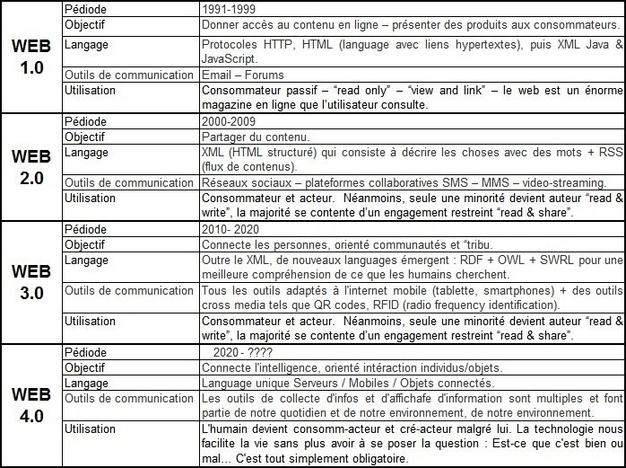

Question 1 :
"Qu’est-ce qu’un navigateur Web ?"
Un navigateur web est un logiciel conçu pour consulter le World Wide Web.
Question 2 :
"De quoi se compose un navigateur Web ?"
Le navigateur Web est composé d'un moteur de rendu (composant logiciel de base qui permet aux logiciels d'afficher les éléments d'une page Web) des standards du Web, d'une interface utilisateur et accessoirement d'un gestionnaire d'extensions appelées plugins
Question 3 :
"Qu’appelle t’on « standards du Web » ?"
Les standards du Web est une expression désignant différentes technologies et protocoles utilisés sur le Web
et en particulier ceux définis par le W3C sous forme de recommandations. Elle se réfère principalement aux
technologies formant le socle principal d'un document web : le HTML et le XHTML, les feuilles de style en
cascade (CSS) et le DOM (Document Object Model). Cependant, elle peut également, selon les contextes,
s'étendre à un ensemble plus vaste, dont :
• HTTP (Hypertext Transfer Protocol)
• PNG (Portable Network Graphics)
• RDF (Resource Description Framework)
• SVG (Scalable Vector Graphics)
• SMIL (Synchronized Multimedia Integration Language)
• URI (Uniform Resource Identifier)
• XML (Extensible Markup Language)
• WCAG (Web Content Accessibility Guidelines)
Question 4 :
"Qu’appelle t’on « interface utilisateur » ?"
Dispositif de dialogue homme-machine, dans lequel les objets à manipuler sont dessinés sous forme de pictogrammes à l'écran, que l'usager peut utiliser en imitant la manipulation physique de ces objets avec un dispositif de pointage, le plus souvent une souris.
Question 5 :
"Qu’appelle t’on « plug in » ?"
En informatique, un plugin ou plug-in, aussi nommé module d'extension, module externe, greffon, plugiciel, ainsi que add-in ou add-on en France, est un paquet (archive, cad fichier compressé, comprenant les fichiers informatiques) qui complète un logiciel hôte pour lui apporter de nouvelles fonctionnalités.
Question 6 :
"Faites un historique de l’évolution du web."
C'est donc en 1991 que le web fait son apparition, le tableau ci-dessous en témoigne. 